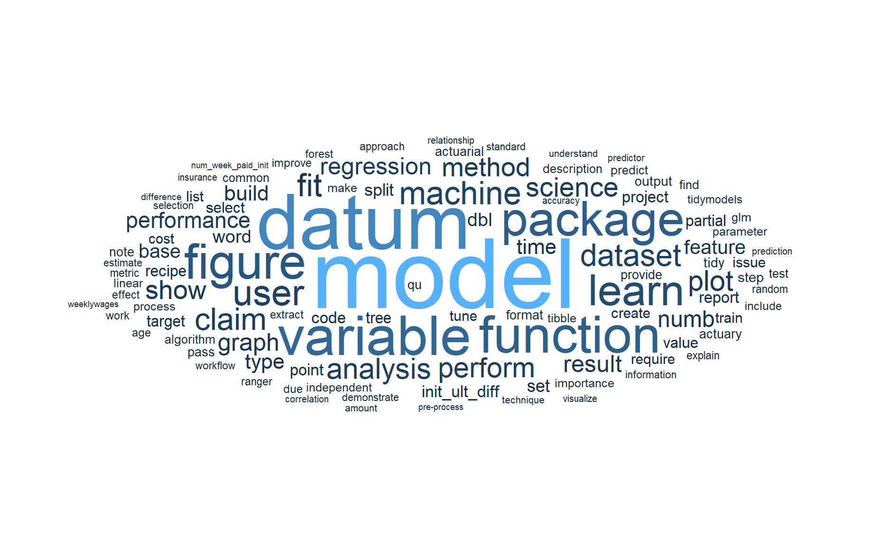
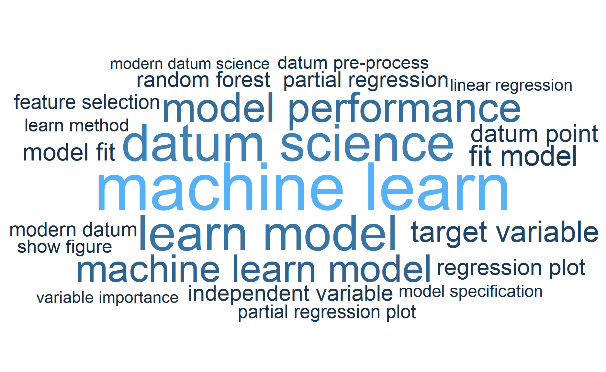

Photo by cottonbro
Previously, while I was reading up the different text analytics, I happened to come acorss a R package that helps to read PDF documents into R environment.
That makes me wonder what if I could use this to help me to summarise the key points in the PDF documents, instead of needing to read through the entire documents.

Taken from giphy
As there isn’t much theory on this exploration, so I will jump straight into the demonstration and it would be a rather short post.
Demonstration
In this demonstration, I will use the pdf copy of the paper I wrote together with my professor when I was doing the capstone project for my master degree.
The pdf can be found under this link.
Setup the environment
I will first call all the packages I need.
pacman::p_load(tidyverse, pdftools, readr, tidytext, ggwordcloud, quanteda, spacyr)Import the pdf into the environment
To import the pdf into the environment, I will use pdf_text function from pdftools package to do so.
df <- pdf_text("data/MITB_Capstone_Lok Jun Haur_Final Report_20210430.pdf")To find out how pages there are in the pdf, we could use length function on the dataset.
length(df)[1] 103We could also extract the content of the selected page by using double bracket as shown below.
df[[10]][1] "data, this project aims to benefit the actuarial community by providing the readers with a\nuse case on how modern data science can be implemented in an actuarial context.\n\n3.2 Claim Cost Estimation\nClaim cost estimation is one of the important tasks in actuarial science. The ability to\nestimate claim cost accurately could translate into a lower cost of capital or a lower premium\nfor the customers.\nIn general, cash flow can be categorized into 4 types depending on the timing of the cash flow\nand whether the amount of the cash flow is known upfront. They are as shown following:\n\n Timing of Cashflow Cashflow Amount\n Type I Deterministic Deterministic\n Type II Deterministic Stochastic\n Type III Stochastic Deterministic\n Type IV Stochastic Stochastic\n\nFigure 4: Different Types of Liability Cashflow\nOften both claim timing and claim payout in general insurance are stochastic. For example,\nthe policyholders may claim any time during their policy coverage and the claim size may\ndepend on other factors such as hospital bill size, cost of repairing the car, and so on. In other\nwords, the claim size depends on what is being covered under the policy. The claim size is\nusually not known or fixed at the point of the inception of the policy.\nTherefore, insurers will typically attempt to estimate the amount of money to set aside to\nmeet the potential claim payout. Incorrect assumptions could hurt the business, even\nresulting in the insurers being insolvent under the extreme scenario.\nBesides, with the advancement of the internet and technology, there are more and more\nthird-party aggregators (eg. CompareFirst, MoneySmart, and so on) that consolidate the\npremiums charged by the different insurers. This has created more transparency for the\ncustomers to compare the premiums insurers are charging for different plans. This has\nindirectly created a price war among the different insurers, resulting in a shrinking profit.\nHence, an inappropriate premium setting might leave the insurers with a pool of “bad” risks.\nAs the competition in the market becomes increasingly intense, insurers are also looking at\ndifferent ways to reduce or lower the cost while protecting the profit margin of the business.\nHence, sharpening assumptions become increasingly important to ensure the assumptions\nare not overly prudent. Updating the assumptions to be more aligned with the underlying\nrisks could potentially allow the insurers to release the capital and use it for other purposes\n(eg. expanding the business into other markets, invest in the infrastructure, and so on).\n"To make the text more readable, we could use cat function from base R.
cat(df[[10]])data, this project aims to benefit the actuarial community by providing the readers with a
use case on how modern data science can be implemented in an actuarial context.
3.2 Claim Cost Estimation
Claim cost estimation is one of the important tasks in actuarial science. The ability to
estimate claim cost accurately could translate into a lower cost of capital or a lower premium
for the customers.
In general, cash flow can be categorized into 4 types depending on the timing of the cash flow
and whether the amount of the cash flow is known upfront. They are as shown following:
Timing of Cashflow Cashflow Amount
Type I Deterministic Deterministic
Type II Deterministic Stochastic
Type III Stochastic Deterministic
Type IV Stochastic Stochastic
Figure 4: Different Types of Liability Cashflow
Often both claim timing and claim payout in general insurance are stochastic. For example,
the policyholders may claim any time during their policy coverage and the claim size may
depend on other factors such as hospital bill size, cost of repairing the car, and so on. In other
words, the claim size depends on what is being covered under the policy. The claim size is
usually not known or fixed at the point of the inception of the policy.
Therefore, insurers will typically attempt to estimate the amount of money to set aside to
meet the potential claim payout. Incorrect assumptions could hurt the business, even
resulting in the insurers being insolvent under the extreme scenario.
Besides, with the advancement of the internet and technology, there are more and more
third-party aggregators (eg. CompareFirst, MoneySmart, and so on) that consolidate the
premiums charged by the different insurers. This has created more transparency for the
customers to compare the premiums insurers are charging for different plans. This has
indirectly created a price war among the different insurers, resulting in a shrinking profit.
Hence, an inappropriate premium setting might leave the insurers with a pool of “bad” risks.
As the competition in the market becomes increasingly intense, insurers are also looking at
different ways to reduce or lower the cost while protecting the profit margin of the business.
Hence, sharpening assumptions become increasingly important to ensure the assumptions
are not overly prudent. Updating the assumptions to be more aligned with the underlying
risks could potentially allow the insurers to release the capital and use it for other purposes
(eg. expanding the business into other markets, invest in the infrastructure, and so on).Next, I will perform some text analysis.
To do so, I will convert the character object into data frame so that it would be easier to analyze later.
To do so, I will first convert the text into different lines by using read_lines function.
df[[10]] %>%
read_lines() [1] "data, this project aims to benefit the actuarial community by providing the readers with a"
[2] "use case on how modern data science can be implemented in an actuarial context."
[3] ""
[4] "3.2 Claim Cost Estimation"
[5] "Claim cost estimation is one of the important tasks in actuarial science. The ability to"
[6] "estimate claim cost accurately could translate into a lower cost of capital or a lower premium"
[7] "for the customers."
[8] "In general, cash flow can be categorized into 4 types depending on the timing of the cash flow"
[9] "and whether the amount of the cash flow is known upfront. They are as shown following:"
[10] ""
[11] " Timing of Cashflow Cashflow Amount"
[12] " Type I Deterministic Deterministic"
[13] " Type II Deterministic Stochastic"
[14] " Type III Stochastic Deterministic"
[15] " Type IV Stochastic Stochastic"
[16] ""
[17] "Figure 4: Different Types of Liability Cashflow"
[18] "Often both claim timing and claim payout in general insurance are stochastic. For example,"
[19] "the policyholders may claim any time during their policy coverage and the claim size may"
[20] "depend on other factors such as hospital bill size, cost of repairing the car, and so on. In other"
[21] "words, the claim size depends on what is being covered under the policy. The claim size is"
[22] "usually not known or fixed at the point of the inception of the policy."
[23] "Therefore, insurers will typically attempt to estimate the amount of money to set aside to"
[24] "meet the potential claim payout. Incorrect assumptions could hurt the business, even"
[25] "resulting in the insurers being insolvent under the extreme scenario."
[26] "Besides, with the advancement of the internet and technology, there are more and more"
[27] "third-party aggregators (eg. CompareFirst, MoneySmart, and so on) that consolidate the"
[28] "premiums charged by the different insurers. This has created more transparency for the"
[29] "customers to compare the premiums insurers are charging for different plans. This has"
[30] "indirectly created a price war among the different insurers, resulting in a shrinking profit."
[31] "Hence, an inappropriate premium setting might leave the insurers with a pool of “bad” risks."
[32] "As the competition in the market becomes increasingly intense, insurers are also looking at"
[33] "different ways to reduce or lower the cost while protecting the profit margin of the business."
[34] "Hence, sharpening assumptions become increasingly important to ensure the assumptions"
[35] "are not overly prudent. Updating the assumptions to be more aligned with the underlying"
[36] "risks could potentially allow the insurers to release the capital and use it for other purposes"
[37] "(eg. expanding the business into other markets, invest in the infrastructure, and so on)." Next, I will trim additional whitespace by using str_squish function.
df[[10]] %>%
read_lines() %>%
str_squish() [1] "data, this project aims to benefit the actuarial community by providing the readers with a"
[2] "use case on how modern data science can be implemented in an actuarial context."
[3] ""
[4] "3.2 Claim Cost Estimation"
[5] "Claim cost estimation is one of the important tasks in actuarial science. The ability to"
[6] "estimate claim cost accurately could translate into a lower cost of capital or a lower premium"
[7] "for the customers."
[8] "In general, cash flow can be categorized into 4 types depending on the timing of the cash flow"
[9] "and whether the amount of the cash flow is known upfront. They are as shown following:"
[10] ""
[11] "Timing of Cashflow Cashflow Amount"
[12] "Type I Deterministic Deterministic"
[13] "Type II Deterministic Stochastic"
[14] "Type III Stochastic Deterministic"
[15] "Type IV Stochastic Stochastic"
[16] ""
[17] "Figure 4: Different Types of Liability Cashflow"
[18] "Often both claim timing and claim payout in general insurance are stochastic. For example,"
[19] "the policyholders may claim any time during their policy coverage and the claim size may"
[20] "depend on other factors such as hospital bill size, cost of repairing the car, and so on. In other"
[21] "words, the claim size depends on what is being covered under the policy. The claim size is"
[22] "usually not known or fixed at the point of the inception of the policy."
[23] "Therefore, insurers will typically attempt to estimate the amount of money to set aside to"
[24] "meet the potential claim payout. Incorrect assumptions could hurt the business, even"
[25] "resulting in the insurers being insolvent under the extreme scenario."
[26] "Besides, with the advancement of the internet and technology, there are more and more"
[27] "third-party aggregators (eg. CompareFirst, MoneySmart, and so on) that consolidate the"
[28] "premiums charged by the different insurers. This has created more transparency for the"
[29] "customers to compare the premiums insurers are charging for different plans. This has"
[30] "indirectly created a price war among the different insurers, resulting in a shrinking profit."
[31] "Hence, an inappropriate premium setting might leave the insurers with a pool of “bad” risks."
[32] "As the competition in the market becomes increasingly intense, insurers are also looking at"
[33] "different ways to reduce or lower the cost while protecting the profit margin of the business."
[34] "Hence, sharpening assumptions become increasingly important to ensure the assumptions"
[35] "are not overly prudent. Updating the assumptions to be more aligned with the underlying"
[36] "risks could potentially allow the insurers to release the capital and use it for other purposes"
[37] "(eg. expanding the business into other markets, invest in the infrastructure, and so on)." Then, I will convert the text into a tibble table by using as_tibble function. I will filter out all the empty rows after converting into the data frame.
df[[10]] %>%
read_lines() %>%
str_squish() %>%
as_tibble() %>%
filter(value != "")# A tibble: 34 x 1
value
<chr>
1 data, this project aims to benefit the actuarial community by prov~
2 use case on how modern data science can be implemented in an actua~
3 3.2 Claim Cost Estimation
4 Claim cost estimation is one of the important tasks in actuarial s~
5 estimate claim cost accurately could translate into a lower cost o~
6 for the customers.
7 In general, cash flow can be categorized into 4 types depending on~
8 and whether the amount of the cash flow is known upfront. They are~
9 Timing of Cashflow Cashflow Amount
10 Type I Deterministic Deterministic
# ... with 24 more rowsdf_page <- df[[10]] %>%
read_lines() %>%
str_squish() %>%
as_tibble() %>%
filter(value != "")
df_page# A tibble: 34 x 1
value
<chr>
1 data, this project aims to benefit the actuarial community by prov~
2 use case on how modern data science can be implemented in an actua~
3 3.2 Claim Cost Estimation
4 Claim cost estimation is one of the important tasks in actuarial s~
5 estimate claim cost accurately could translate into a lower cost o~
6 for the customers.
7 In general, cash flow can be categorized into 4 types depending on~
8 and whether the amount of the cash flow is known upfront. They are~
9 Timing of Cashflow Cashflow Amount
10 Type I Deterministic Deterministic
# ... with 24 more rowsNext, I will tokenize the words by using token function.
I will also perform the following when tokenizing the words:
Remove punctuation
Remove numbers
Remove symbols
Remove separators
Split the words that join together by hyphens
I will also convert the words to small letters and remove the stopwords.
df_token <-
tokens(df_page$value,
remove_punct = TRUE,
remove_numbers = TRUE,
remove_symbols = TRUE,
remove_separators = TRUE,
split_hyphens = TRUE) %>%
tokens_tolower() %>%
tokens_remove(stopwords(language = "en", source = "smart"), padding = FALSE)df_tokenTokens consisting of 34 documents.
text1 :
[1] "data" "project" "aims" "benefit" "actuarial"
[6] "community" "providing" "readers"
text2 :
[1] "case" "modern" "data" "science"
[5] "implemented" "actuarial" "context"
text3 :
[1] "claim" "cost" "estimation"
text4 :
[1] "claim" "cost" "estimation" "important" "tasks"
[6] "actuarial" "science" "ability"
text5 :
[1] "estimate" "claim" "cost" "accurately" "translate"
[6] "lower" "cost" "capital" "lower" "premium"
text6 :
[1] "customers"
[ reached max_ndoc ... 28 more documents ]Now the page is being tokenized.
I will perform frequency count on the word as shown below.
df_token_df <-
df_token %>%
dfm() %>%
tidy() %>%
group_by(term) %>%
summarise(tot_count = sum(count)) %>%
arrange(desc(tot_count))
df_token_df# A tibble: 127 x 2
term tot_count
<chr> <dbl>
1 claim 10
2 insurers 8
3 cost 6
4 stochastic 5
5 assumptions 4
6 deterministic 4
7 size 4
8 type 4
9 actuarial 3
10 amount 3
# ... with 117 more rowsNext I will visualize the texts in word cloud.
df_token_df %>%
filter(tot_count > 1) %>%
ggplot(aes(label = term, size = tot_count, color = tot_count)) +
geom_text_wordcloud_area(shape = "circle") +
scale_size_area(max_size = 18) +
theme_minimal()From the word cloud, we can see that the content of the selected page is about insurance claim cost. Other key words are ‘assumptions’, ‘cashflow’, ‘stochastic’ and so on.
To analyze the whole context of the document, I will use a for loop to loop through the main content of the report.
page_num <- 5:93 # page number for the main content of the report
df_page_2 <- tibble()
for(i in page_num){
temp <-
df[[i]] %>%
read_lines() %>%
str_squish() %>%
as_tibble() %>%
filter(value != "")
temp_page <-
tokens(temp$value,
remove_punct = TRUE,
remove_numbers = TRUE,
remove_symbols = TRUE,
remove_separators = TRUE,
split_hyphens = FALSE) %>%
tokens_tolower() %>%
tokens_remove(stopwords(language = "en", source = "smart"), padding = FALSE) %>%
tokens_replace(pattern = lexicon::hash_lemmas$token,
replacement = lexicon::hash_lemmas$lemma) %>%
dfm() %>%
tidy() %>%
group_by(term) %>%
summarise(tot_count = sum(count)) %>%
mutate(page = i)
df_page_2 <- df_page_2 %>%
bind_rows(temp_page)
}df_page_3 <- df_page_2 %>%
group_by(term) %>%
summarise(tot_count = sum(tot_count)) %>%
arrange(desc(tot_count))df_page_3 %>%
filter(tot_count >= 20) %>%
ggplot(aes(label = term, size = tot_count, color = tot_count)) +
geom_text_wordcloud_area(shape = "circle") +
scale_size_area(max_size = 18) +
theme_minimal()
From the word cloud, we can see the document is about datum (i.e. the lemma word for data) and model.
N-gram
Personally, I prefer generating different ngrams to see whether there is any interesting insights could be extracted.
df_page_2_ngram <- tibble()
for(i in page_num){
temp <-
df[[i]] %>%
read_lines() %>%
str_squish() %>%
as_tibble() %>%
filter(value != "")
temp_page <-
tokens(temp$value,
remove_punct = TRUE,
remove_numbers = TRUE,
remove_symbols = TRUE,
remove_separators = TRUE,
split_hyphens = FALSE) %>%
tokens_tolower() %>%
tokens_remove(stopwords(language = "en", source = "smart"), padding = FALSE) %>%
tokens_replace(pattern = lexicon::hash_lemmas$token,
replacement = lexicon::hash_lemmas$lemma) %>%
tokens_ngrams(n = 2:3, concatenator = " ") %>%
dfm() %>%
tidy() %>%
group_by(term) %>%
summarise(tot_count = sum(count)) %>%
mutate(page = i)
df_page_2_ngram <- df_page_2_ngram %>%
bind_rows(temp_page)
}df_page_2_ngram %>%
group_by(term) %>%
summarise(tot_count = sum(tot_count)) %>%
arrange(desc(tot_count)) %>%
filter(tot_count >= 15) %>%
ggplot(aes(label = term, size = tot_count, color = tot_count)) +
geom_text_wordcloud_area(shape = "circle") +
scale_size_area(max_size = 18) +
theme_minimal()
Now the words in the word cloud make more sense.
Now we can see the report is about machine learning and data science.
Conclusion
That’s all for the day!
Thanks for reading the post until the end.
Feel free to contact me through email or LinkedIn if you have any suggestions on future topics to share.
Refer to this link for the blog disclaimer.
Till next time, happy learning!
Photo by Tyler Lastovich